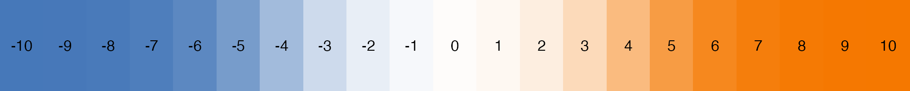

zlog.RmdThe zlog package offers functions to transform laboratory measurements into standardised z or z(log)-values as suggested in Hoffmann et al. (2017). Therefore the lower and upper reference limits are needed. If these are not known they could estimated from a given sample.
Example data and reference limits are taken from Hoffmann et al. (2017), Table 2.
## [1] -0.345876 -2.190548 -1.268212 -0.115292 1.498796 -0.345876 -3.804636
## [8] -2.882300 -4.496388## [1] -0.15472223 -2.24698167 -1.14569028 0.07826303 1.57162335 -0.15472223
## [7] -4.52949253 -3.16160843 -5.69571148Hoffmann et al. (2017) suggested a colour gradient to visualise laboratory measurements for the user.

It could be used to highlight the values in a table:
| Category | albumin | zlog(albumin) | bilirubin | zlog(bilirubin) |
|---|---|---|---|---|
| blood donor | 42 | -0.15 | 11 | 0.88 |
| blood donor | 34 | -2.25 | 9 | 0.55 |
| blood donor | 38 | -1.15 | 2 | -1.96 |
| hepatitis without cirrhosis | 43 | 0.08 | 5 | -0.43 |
| hepatitis without cirrhosis | 50 | 1.57 | 22 | 2.04 |
| hepatitis without cirrhosis | 42 | -0.15 | 42 | 3.12 |
| hepatitis with cirrhosis | 27 | -4.53 | 37 | 2.90 |
| hepatitis with cirrhosis | 31 | -3.16 | 200 | 5.72 |
| hepatitis with cirrhosis | 24 | -5.70 | 20 | 1.88 |
The reference_limits functions calculates the lower and upper 2.5 or 97.5 (or a user given probability) quantiles:
reference_limits(albumin)## lower upper
## 24.6 48.6
reference_limits(albumin, probs = c(0.05, 0.95))## lower upper
## 25.2 47.2
exp(reference_limits(log(albumin)))## lower upper
## 24.57207 48.51429Most laboratories use their own age- and sex-specific reference limits. The lookup_limits function could be used to find the correct reference limit.
# toy example
reference <- data.frame(
param = c("albumin", rep("bilirubin", 4)),
age = c(0, 1, 2, 3, 7), # days
sex = "both",
lower = c(35, rep(NA, 4)), # no real reference values
upper = c(52, 5, 8, 13, 18) # no real reference values
)
knitr::kable(reference)| param | age | sex | lower | upper |
|---|---|---|---|---|
| albumin | 0 | both | 35 | 52 |
| bilirubin | 1 | both | NA | 5 |
| bilirubin | 2 | both | NA | 8 |
| bilirubin | 3 | both | NA | 13 |
| bilirubin | 7 | both | NA | 18 |
# lookup albumin reference values for 18 year old woman
lookup_limits(
age = 18 * 365.25,
sex = "female",
table = reference[reference$param == "albumin",]
)## lower upper
## [1,] 35 52
# lookup bilirubin referenc values for infants
lookup_limits(
age = 0:8,
sex = rep(c("female", "male"), 5:4),
table = reference[reference$param == "bilirubin",]
)## lower upper
## [1,] NA NA
## [2,] NA 5
## [3,] NA 8
## [4,] NA 13
## [5,] NA 13
## [6,] NA 13
## [7,] NA 13
## [8,] NA 18
## [9,] NA 18PBC ExampleFor demonstration we choose the pbc dataset from the survival package and exclude all non-laboratory measurements except age and sex:
library("survival")
data("pbc")
labs <- c(
"bili", "chol", "albumin", "copper", "alk.phos", "ast", "trig",
"platelet", "protime"
)
pbc <- pbc[, c("age", "sex", labs)]
knitr::kable(head(pbc), digits = 1)| age | sex | bili | chol | albumin | copper | alk.phos | ast | trig | platelet | protime |
|---|---|---|---|---|---|---|---|---|---|---|
| 58.8 | f | 14.5 | 261 | 2.6 | 156 | 1718.0 | 137.9 | 172 | 190 | 12.2 |
| 56.4 | f | 1.1 | 302 | 4.1 | 54 | 7394.8 | 113.5 | 88 | 221 | 10.6 |
| 70.1 | m | 1.4 | 176 | 3.5 | 210 | 516.0 | 96.1 | 55 | 151 | 12.0 |
| 54.7 | f | 1.8 | 244 | 2.5 | 64 | 6121.8 | 60.6 | 92 | 183 | 10.3 |
| 38.1 | f | 3.4 | 279 | 3.5 | 143 | 671.0 | 113.2 | 72 | 136 | 10.9 |
| 66.3 | f | 0.8 | 248 | 4.0 | 50 | 944.0 | 93.0 | 63 | NA | 11.0 |
Next we estimate all reference limits from the data:
| bili | chol | albumin | copper | alk.phos | ast | trig | platelet | protime | |
|---|---|---|---|---|---|---|---|---|---|
| lower | 0.400 | 174.075 | 2.54 | 13.00 | 504.75 | 49.6000 | 52.025 | 95.0 | 9.5000 |
| upper | 17.315 | 1086.225 | 4.22 | 294.95 | 9261.74 | 245.2488 | 279.800 | 470.4 | 13.1625 |
Subsequently we can convert the laboratory measurements into z(log)-values:
pbctbl <- head(pbc, n = 25)
pbctbl[labs] <- lapply(labs, function(l) {
kableExtra::cell_spec(
sprintf("%.1f", unlist(pbctbl[l])),
background = zcol(unlist(pbctbl[l])),
align = "right"
)
})
kableExtra::kable_classic(
kableExtra::kbl(pbctbl, digits = 1, escape = FALSE),
"basic"
)| age | sex | bili | chol | albumin | copper | alk.phos | ast | trig | platelet | protime |
|---|---|---|---|---|---|---|---|---|---|---|
| 58.8 | f | 1.8 | -1.1 | -1.8 | 1.2 | -0.3 | 0.5 | 0.8 | -0.3 | 1.0 |
| 56.4 | f | -0.9 | -0.8 | 1.8 | -0.2 | 1.7 | 0.1 | -0.7 | 0.1 | -0.6 |
| 70.1 | m | -0.7 | -1.9 | 0.5 | 1.5 | -1.9 | -0.3 | -1.8 | -0.8 | 0.8 |
| 54.7 | f | -0.4 | -1.2 | -2.0 | 0.0 | 1.4 | -1.5 | -0.6 | -0.4 | -1.0 |
| 38.1 | f | 0.3 | -1.0 | 0.6 | 1.1 | -1.6 | 0.1 | -1.2 | -1.1 | -0.3 |
| 66.3 | f | -1.2 | -1.2 | 1.5 | -0.3 | -1.1 | -0.4 | -1.5 | NA | -0.2 |
| 55.5 | f | -1.0 | -0.6 | 1.7 | -0.2 | -1.3 | -1.5 | 1.3 | -0.1 | -1.7 |
| 53.1 | f | -2.3 | -0.9 | 1.5 | -0.2 | 1.0 | -3.3 | 1.0 | 1.4 | -0.2 |
| 42.5 | f | 0.2 | 0.5 | -0.5 | 0.3 | 0.1 | 0.7 | -0.7 | 0.4 | -0.2 |
| 70.6 | f | 1.6 | -1.7 | -1.4 | 1.0 | -1.2 | 0.7 | 0.4 | 0.9 | 0.3 |
| 53.7 | f | -0.7 | -1.1 | 1.8 | -0.4 | -0.9 | -0.8 | -1.0 | 0.5 | 0.8 |
| 59.1 | f | 0.3 | -1.3 | 0.6 | 0.5 | -1.7 | -0.7 | -0.6 | -2.7 | 2.4 |
| 45.7 | f | -1.4 | -0.9 | 1.3 | -0.5 | -0.8 | -0.5 | 0.2 | 0.4 | -0.6 |
| 56.2 | m | -1.2 | NA | -2.8 | -0.5 | -1.5 | -1.1 | NA | -0.7 | -0.2 |
| 64.6 | f | -1.2 | -1.4 | 1.3 | 1.3 | 1.9 | 0.4 | -0.5 | 0.8 | -0.2 |
| 40.4 | f | -1.4 | -1.6 | 0.9 | -1.0 | -1.5 | -1.0 | -1.7 | -0.2 | -0.4 |
| 52.2 | f | 0.0 | -1.0 | -0.3 | 1.2 | -0.5 | 0.2 | 0.1 | 0.1 | -0.8 |
| 53.9 | f | 1.5 | -1.9 | -1.2 | 2.8 | -1.1 | 2.3 | 1.2 | 0.7 | 1.2 |
| 49.6 | f | -1.4 | -1.3 | 0.6 | -0.6 | -0.2 | -0.4 | 0.0 | -0.0 | -0.2 |
| 60.0 | f | 0.7 | -0.3 | 0.5 | 1.0 | -0.2 | 0.3 | 0.3 | 1.0 | 1.8 |
| 64.2 | m | -1.5 | -1.2 | 1.2 | -0.5 | -1.3 | -1.3 | -0.9 | 1.1 | 0.2 |
| 56.3 | f | 0.3 | -1.0 | 0.8 | 2.5 | -0.6 | 0.2 | -1.8 | -0.5 | 0.4 |
| 56.0 | f | 2.0 | -0.2 | -0.8 | 2.8 | 1.4 | 1.8 | 1.1 | 0.0 | 0.5 |
| 44.5 | m | -0.2 | 0.1 | 1.5 | 0.9 | 1.3 | 1.7 | 1.5 | -2.7 | -1.5 |
| 45.1 | f | -1.4 | -0.8 | 1.7 | -0.5 | -1.6 | -0.1 | -1.4 | 1.0 | 0.1 |
## R version 4.0.3 (2020-10-10)
## Platform: x86_64-apple-darwin17.0 (64-bit)
## Running under: macOS Catalina 10.15.7
##
## Matrix products: default
## BLAS: /Library/Frameworks/R.framework/Versions/4.0/Resources/lib/libRblas.dylib
## LAPACK: /Library/Frameworks/R.framework/Versions/4.0/Resources/lib/libRlapack.dylib
##
## locale:
## [1] en_US.UTF-8/en_US.UTF-8/en_US.UTF-8/C/en_US.UTF-8/en_US.UTF-8
##
## attached base packages:
## [1] stats graphics grDevices utils datasets methods base
##
## other attached packages:
## [1] survival_3.2-7 zlog_0.0.5
##
## loaded via a namespace (and not attached):
## [1] rstudioapi_0.13 knitr_1.30 xml2_1.3.2 magrittr_2.0.1
## [5] splines_4.0.3 munsell_0.5.0 rvest_0.3.6 lattice_0.20-41
## [9] viridisLite_0.3.0 colorspace_2.0-0 R6_2.5.0 ragg_0.4.0
## [13] rlang_0.4.8 highr_0.8 stringr_1.4.0 httr_1.4.2
## [17] tools_4.0.3 grid_4.0.3 webshot_0.5.2 xfun_0.19
## [21] htmltools_0.5.0 systemfonts_0.3.2 yaml_2.2.1 assertthat_0.2.1
## [25] rprojroot_2.0.2 digest_0.6.27 lifecycle_0.2.0 pkgdown_1.6.1
## [29] crayon_1.3.4 textshaping_0.2.1 Matrix_1.2-18 kableExtra_1.3.1
## [33] fs_1.5.0 memoise_1.1.0 glue_1.4.2 evaluate_0.14
## [37] rmarkdown_2.5 stringi_1.5.3 compiler_4.0.3 scales_1.1.1
## [41] desc_1.2.0Hoffmann, Georg, Frank Klawonn, Ralf Lichtinghagen, and Matthias Orth. 2017. “The Zlog-Value as Basis for the Standardization of Laboratory Results.” LaboratoriumsMedizin 41 (1): 23–32. https://doi.org/10.1515/labmed-2016-0087.